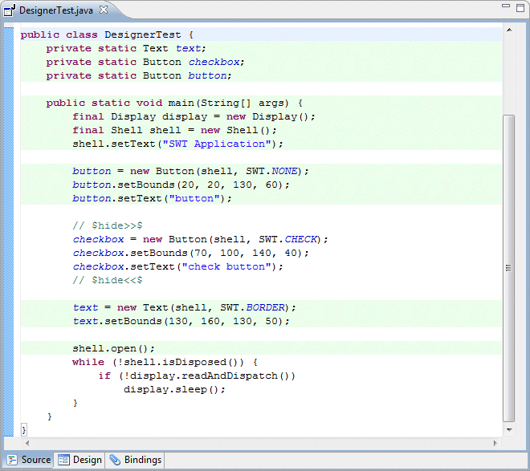
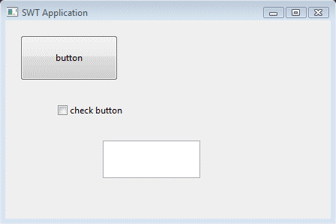
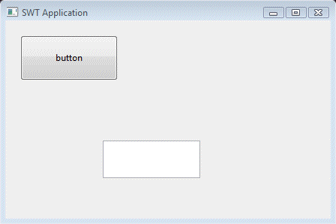

This page is used to control various Code Parsing options.
The tool supports special comment tags that can be used to hide code from its parser. This can be useful, if you need to add some complex dynamic code to your layout that can't be parsed by the editor. You can also use a special end-of-line comment to hide a single line of code (e.g., a single attribute of a widget).
Begin hidden code block tag
This preference determines the comment text used to designate the beginning of a hidden block of code.
End hidden code block tag
This preference determines the comment text used to designate the end of a hidden block of code.
Highlight visited/executed lines in source after parse
This preference determines whether the lines that are visited/executed during a parse are highlighted.
Visited line highlight color
This preference determines color is used to highlight visited/executed lines.
Single hidden code line tag
This preference determines the end-of-line comment text used to hide a single line of code.
Example
Give the following simple example window, placing a pair of hide tags around the checkbox widget will hide it from the parser and it will not show up in the design view. The lines that are visited/executed by the parser are highlighted in light green.

Without the hide tags, the window looks like the left image; with the tags, it looks like the right image:
 